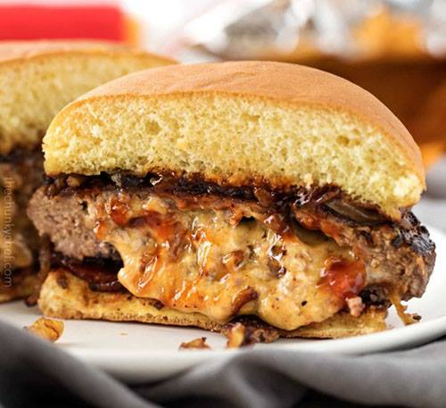

Cheese World first opened in 1985 in california. We moved to New York in the early 2000. Cheese has been a insperation for my entire life. through cooking and serving it since 1985, i am able to being the expirence of delisouse cheese themes foods.
